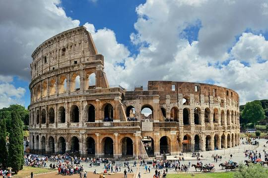

The Leaning Tower of Pisa, or simply, the Tower of Pisa, is the
campanile, or freestanding bell tower, of Pisa Cathedral. It is known
for its nearly four-degree lean, the result of an unstable foundation.
The tower is one of three structures in the Pisa's Cathedral Square,
which includes the cathedral and Pisa Baptistry. The height of the
tower is 55.86 metres from the ground on the low side and 56.67 m on
the high side. The width of the walls at the base is 2.44 m. Its
weight is estimated at 14,500 tonnes. The tower has 296 or 294 steps;
the seventh floor has two fewer steps on the north-facing staircase.
The tower began to lean during construction in the 12th century, due
to soft ground which could not properly support the structure's
weight. It worsened through the completion of construction in the 14th
century. By 1990, the tilt had reached 5.5 degrees. The structure was
stabilized by remedial work between 1993 and 2001, which reduced the
tilt to 3.97 degrees.

The Roman Forum, also known by its Latin name Forum Romanum, is a
rectangular forum surrounded by the ruins of several important ancient
government buildings at the center of the city of Rome. Citizens of
the ancient city referred to this space, originally a marketplace, as
the Forum Magnum, or simply the Forum. For centuries the Forum was the
center of day-to-day life in Rome: the site of triumphal processions
and elections; the venue for public speeches, criminal trials, and
gladiatorial matches; and the nucleus of commercial affairs. Here
statues and monuments commemorated the city's great men. The teeming
heart of ancient Rome, it has been called the most celebrated meeting
place in the world, and in all history. Located in the small valley
between the Palatine and Capitoline Hills, the Forum today is a
sprawling ruin of architectural fragments and intermittent
archaeological excavations attracting 4.5 million or more sightseers
yearly. Many of the oldest and most important structures of the
ancient city were located on or near the Forum. The Roman Kingdom's
earliest shrines and temples were located on the southeastern edge.

The Trevi Fountain is an 18th-century fountain in the Trevi district
in Rome, Italy, designed by Italian architect Nicola Salvi and
completed by Giuseppe Pannini and several others. Standing 26.3 metres
high and 49.15 metres wide, it is the largest Baroque fountain in the
city and one of the most famous fountains in the world. The fountain
has appeared in several films, including Roman Holiday; Three Coins in
the Fountain; Federico Fellini's classic, La Dolce Vita; Sabrina Goes
to Rome; and The Lizzie McGuire Movie

The Colosseum is an oval amphitheatre in the centre of the city of
Rome, Italy, just east of the Roman Forum. It is the largest ancient
amphitheatre ever built, and is still the largest standing
amphitheatre in the world today, despite its age. Construction began
under the emperor Vespasian in 72 and was completed in 80 AD under his
successor and heir, Titus. Further modifications were made during the
reign of Domitian. The three emperors that were patrons of the work
are known as the Flavian dynasty, and the amphitheatre was named the
Flavian Amphitheatre by later classicists and archaeologists for its
association with their family name. The Colosseum is built of
travertine limestone, tuff, and brick-faced concrete. It could hold an
estimated 50,000 to 80,000 spectators at various points in its
history, having an average audience of some 65,000; it was used for
gladiatorial contests and public spectacles including animal hunts,
executions, re-enactments of famous battles, and dramas based on Roman
mythology, and briefly mock sea battles. The building ceased to be
used for entertainment in the early medieval era.

Florence Cathedral, formally the Cattedrale di Santa Maria del Fiore,
is the cathedral of Florence, Italy. It was begun in 1296 in the
Gothic style to a design of Arnolfo di Cambio and was structurally
completed by 1436, with the dome engineered by Filippo Brunelleschi.
The exterior of the basilica is faced with polychrome marble panels in
various shades of green and pink, bordered by white, and has an
elaborate 19th-century Gothic Revival façade by Emilio De Fabris. The
cathedral complex, in Piazza del Duomo, includes the Baptistery and
Giotto's Campanile. These three buildings are part of the UNESCO World
Heritage Site covering the historic centre of Florence and are a major
tourist attraction of Tuscany. The basilica is one of Italy's largest
churches, and until the development of new structural materials in the
modern era, the dome was the largest in the world. It remains the
largest brick dome ever constructed. The cathedral is the mother
church of the Archdiocese of Florence, whose archbishop is Giuseppe
Betori.